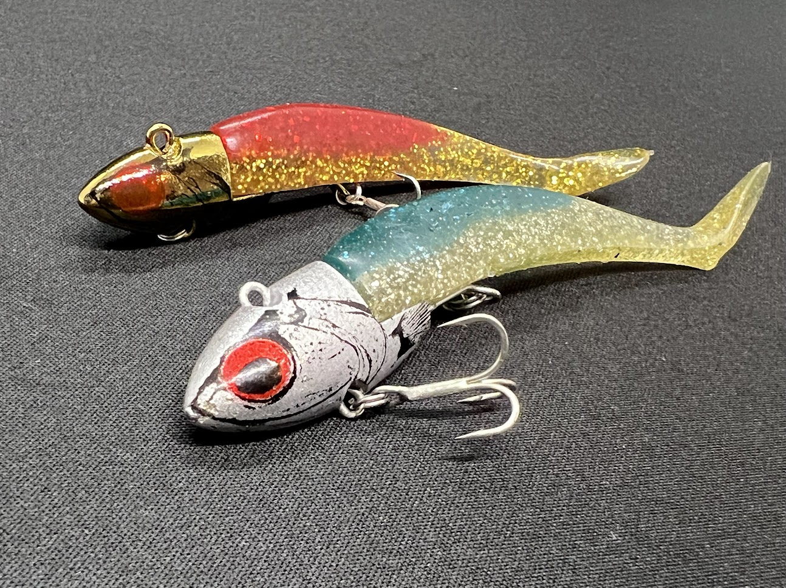
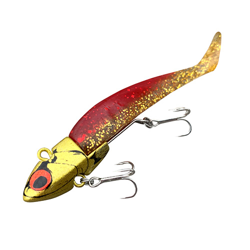
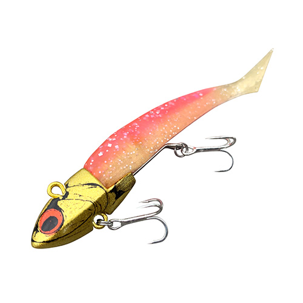
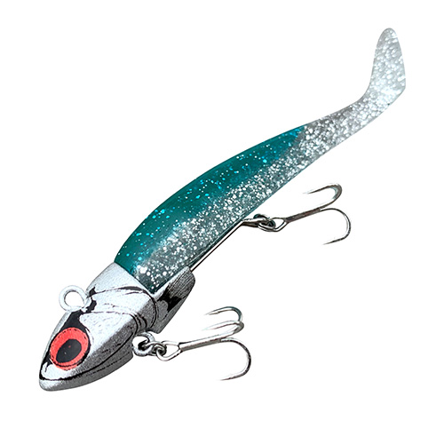
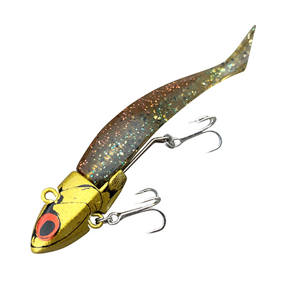

VJ16
自他ともに認めるシーバスのエサ。これで釣れなきゃ魚はいないアングラーの秘密道具。

- メーカー
- COREMAN
（コアマン） - 長さ
- 95mm
- 重さ
- 16g
- タイプ
- ジグヘッド＋ワーム
- アクション
- バイブレーション
- ターゲット
魚種 - シーバス
- 開発者
- 泉 裕文
VJ16の特徴・コンセプト
VJ16は、COREMANの代表ルアーで、シーバス界でエサより釣れると人気のルアーです。 VJはバイブレーションジグヘッドの略で、バイブレーションしながら、ワームのしっぽを揺らしながら誘います。
-
ボディ全体が絶妙に揺れるバイブレーション
圧倒的な食わせ能力をもつワームが、より細かく振動してシーバスを強烈に誘います。
-
早い浮き上がりでシャローレンジ攻略
浮き上がりが早く、シーバスの捕食域であるシャローエリアでも使いやすい設計です。
-
飛距離性能の高さ
ワームルアーなのに飛距離がとてもよいにもかかわらず、ワームナチュラルアクションも両立。
VJ16の使い方・得意な状況
VJ16はボトムから表層付近までの幅広いレンジを狙うことができます。 ワームなのにジグヘッドの形状が風を切るような形状で飛距離が出ます。 使い方は着底してからただ巻き！巻き速度はちょっと早めがおすすめ。 浮き上がりが早いので定期的にボトムを取るのが良いです。 シーバスだけでなく、ハタやカサゴなどの根魚やフラットフィッシュも釣れるので、テトラ付近やサーフでの使用もオススメです。 フックが少し小さいので、大物を狙う場合はフックをサイズアップしておきましょう。
ワンポイント
アルカリシャッド(ワーム部分)は頻繁に刺しなおしてみよう。刺さり方によってかなりアクションが変わります。 刺しなおしまくることでかなり安定してアクションするようになります。 水深のある堤防や沖堤防などではテクトロで狙うのも定番の釣り方です。
人気カラー

アカキンマズメはこれ一択。

ゴールドピンクナイトゲームではナチュラルアピール。

キビナゴイワシ青物も釣れる定番カラー

ハゼドンコ地味だけどサーフでは最強カラー
画像出典:COREMAN
実釣インプレッション
使い方は簡単。着底したらただ巻きするだけ。浮き上がりは早く、シャローでも使用できます。 ただし、巻き速度が遅すぎるとねがかりするので注意。 何度もワームを刺しなおして良いポジションを探すのが良い。 沖堤防でテクトロも釣果が出やすい釣り方です。
VJシリーズ
VJのサイズラインナップはこちら。
- VJ12
- VJ16
- VJ22
- VJ28
- VJ36